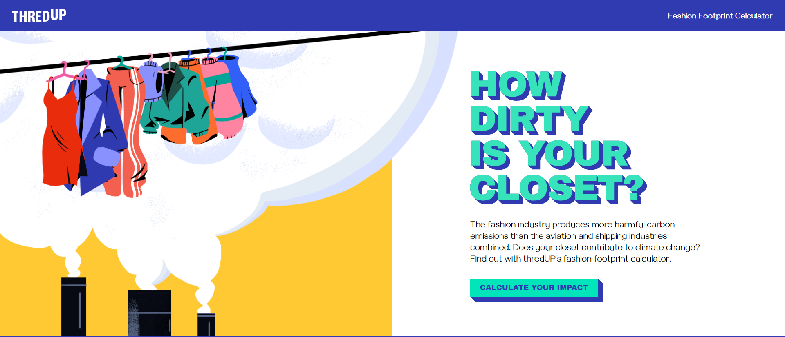

Mass-production of cheap, disposable clothing. Countless new collections per year make us feel constantly out of date and encourage us to keep buying more.
“Fast fashion” is a buzz phrase in the sustainability world. And as we continue to encourage the industry to move towards a more sustainable and ethical future, it’s helpful to know what we're up against. But what does this term really mean? Fast fashion is a design, manufacturing, and marketing method focused on rapidly producing high volumes of clothing. Garment production utilizes trend replication and low-quality materials in order to bring inexpensive styles to the public. These cheaply made, trendy pieces have resulted in an industry-wide movement towards overwhelming amounts of consumption. Unfortunately, this results in harmful impacts on the environment, garment workers, and, ultimately, consumers’ wallets. But to better understand and define fast fashion, let’s first familiarize ourselves with the movement’s history and the harmful impact it has had.
By ThredUP
